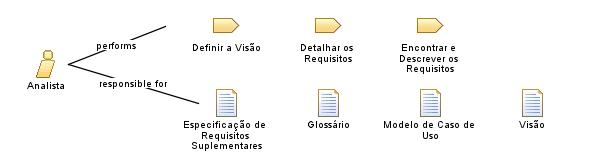

| Role: Analista |
 |
|
Relationships
 |
||
| Additionally Performs | ||
|---|---|---|
| Modifies |
|
|
Staffing
| Skills | Um analista necessita dos seguintes conhecimentos e habilidades:
|
|---|---|
| Assignment Approaches | Este papel pode ser atribuído das seguintes formas:
|
Este programa e o material que o acompanha são disponibilizados sob a |